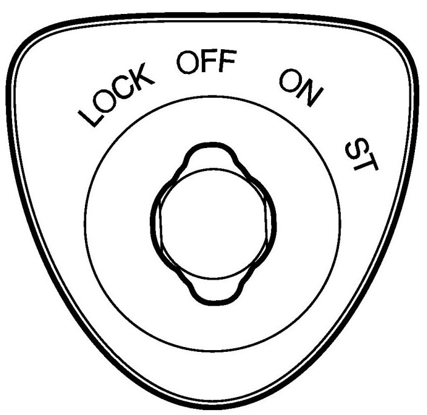

Key Cannot Be Turned From Off to Lock
Key Cannot Be Turned From OFF To LOCK

Fault symptom
Key cannot be turned from OFF to LOCK
Conditions
No DTCs stored with the fault symptom in question.
Battery voltage greater than 9 V.
Diagnostic help
This symptom can arise if system voltage is low.
IMPORTANT: If DTCs are cleared before the fault is remedied, important information on the cause of the fault may be lost and the system may not be able to detect the cause of the fault again.
When DTCs are read out, the diagnostic instrument shows what is blocking the turn of the key.
Most functions that can make it impossible to turn the key are monitored by self-diagnostics and therefore generate DTCs if they are faulty.
Fault diagnosis is only used for faults that are not monitored by self-diagnostics.